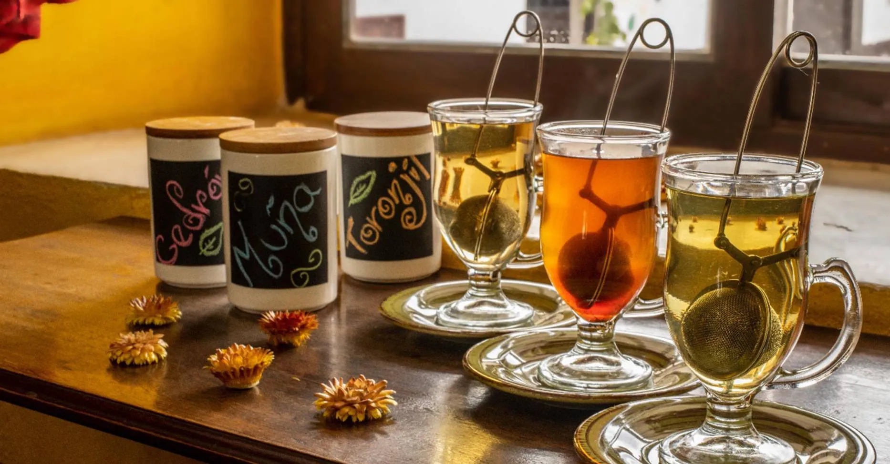

Trazabilidad
De la chacra amazónica a tu taza: así es el camino de nuestro café.
¿Qué es la trazabilidad?
Es poder seguir el camino de tu café: desde la chacra donde se cultivó, pasando por el tueste, hasta la taza que tienes en las manos. En Café Fusiones creemos que saber de dónde viene lo que tomas es parte de la experiencia, y una forma de reconocer el trabajo de los caficultores amazónicos que lo hacen posible.
Por eso cada producto que servimos tiene un código propio. Puedes encontrarlo en el empaque, en tu boleta o escaneando el código QR de la mesa, y buscarlo aquí abajo para conocer su origen, su productor y el proceso que siguió antes de llegar a ti.
Busca la trazabilidad de tu café
Ingresa el código del producto. El QR es solo un atajo: escribirlo aquí lleva al mismo resultado.

Aliados productores
Nuestros proveedores son nuestros aliados estratégicos, y buscamos retribuirlos de manera justa. Trabajamos directamente con organizaciones comunales como la Cooperativa Agraria Rodríguez de Mendoza y la ACP Bosque Berlín. Participamos como co-productores de los insumos que utilizamos, con la finalidad de asegurar, mantener y apoyar la calidad y mejora continua en nuestros aliados.